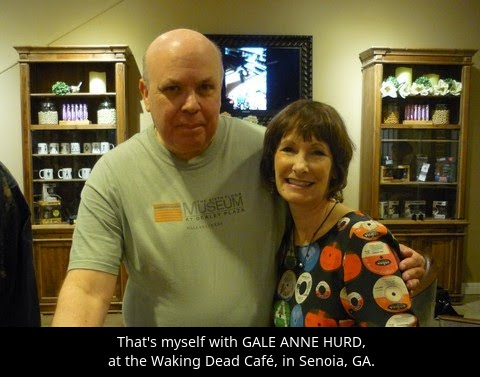
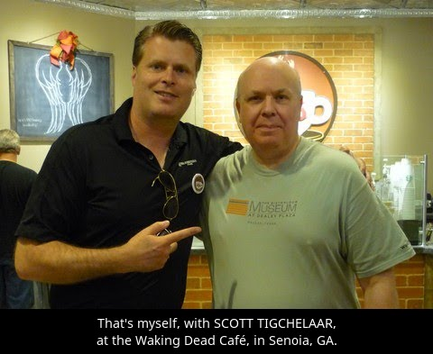
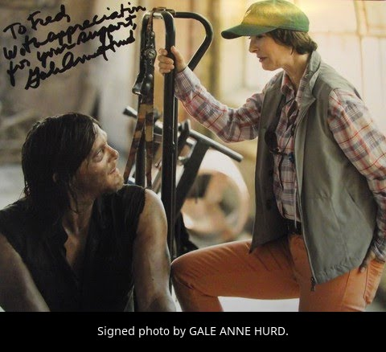

WALKING DEAD MAPSAbout This WebsiteThis website is a collection of information from various sources and my own research into the filming locations for the AMC TV series, The Walking Dead.
I first became interested in the show right from the very start of Season 1, and
when I was planning a vacation to Florida (I live in the UK) way back in
February 2012, I thought it would be a great idea to travel up to Georgia for a
few days to visit the filming locations for the show.

My visits to Georgia over recent years have not been only because of the filming locations, but also because Georgia is such an interesting place to visit - the countryside is a pleasure to see, and the people I've met on my travels have been so friendly - no doubt the famous Southern hospitality!
Note: As this website was originally set up as a resource for myself only, it does not go into any depth about the various filming locations. The descriptions were sufficient for myself, due to my acquired knowledge, to be able to utilise the information directly from my smartphone, when out and about visiting various locations in Georgia.November 2022: Having reached the end of 'The Walking Dead' (AMC TV series), I think that it's time to acknowledge the fine work done by Mike Riley and the Stalwart Films team, and also to Scott Tigchelaar and the Raleigh Studios, for the actual filming locations. Also not forgetting the residents of Georgia for putting up with the inconvenience that the filming may have had on their daily activities. I recall my visits to Georgia - Atlanta, Senoia, Haralson, Griffin, Newnan, Grantville, and of course the wonderful countryside and people - with great fondness. Thank you all! |
|
|